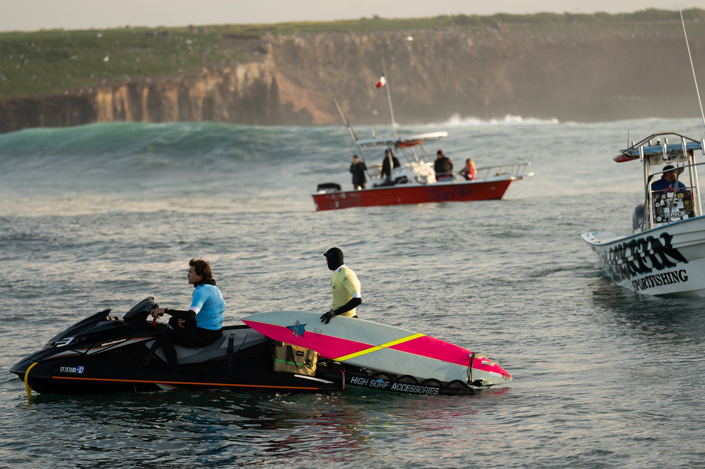
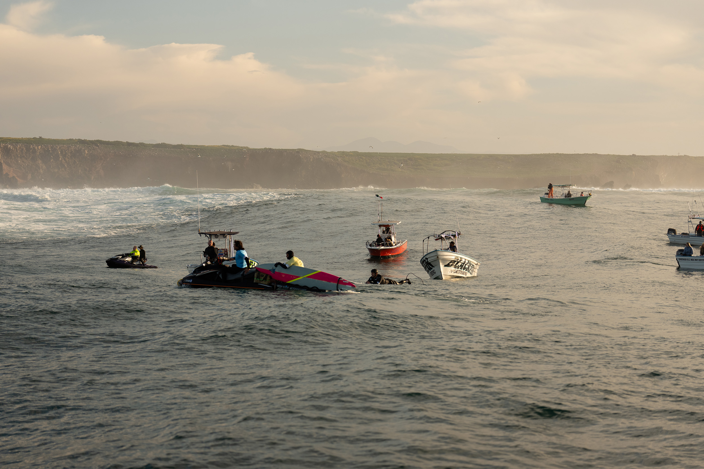
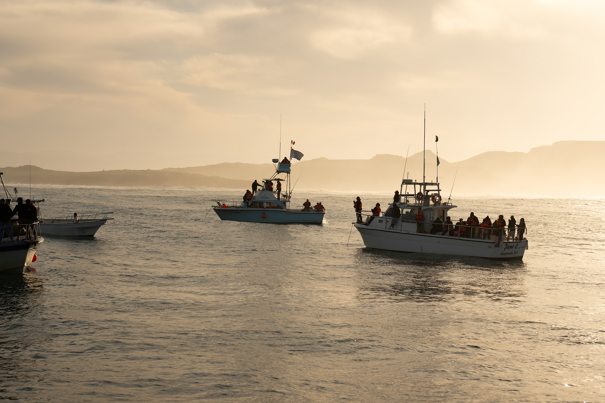
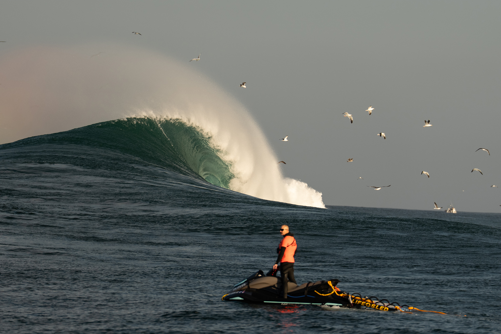
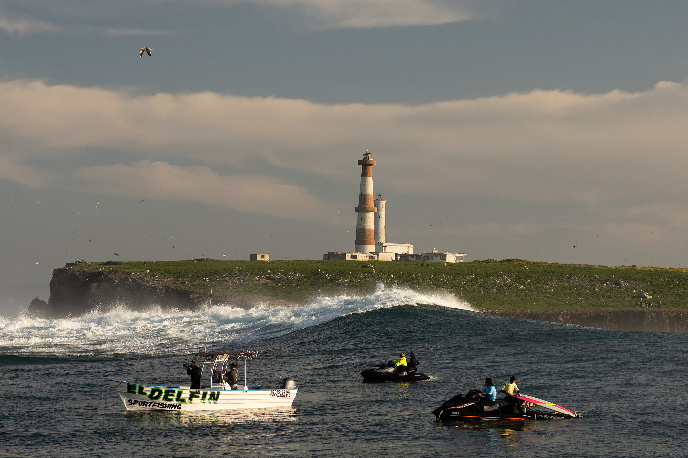
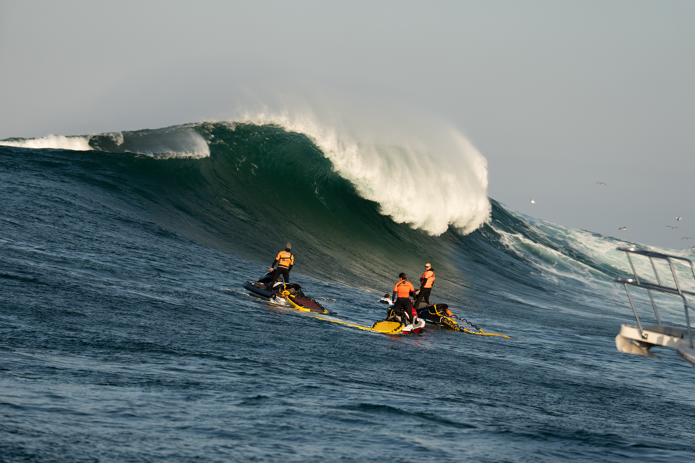
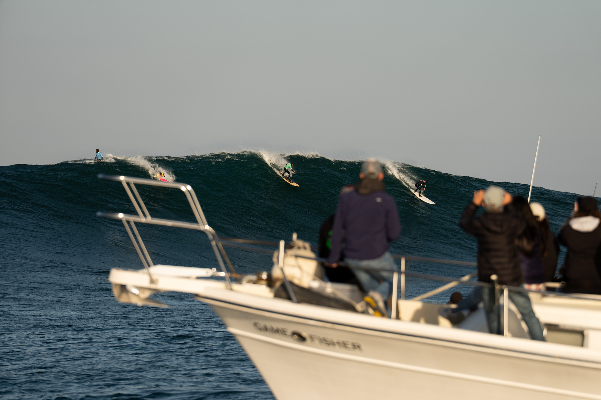
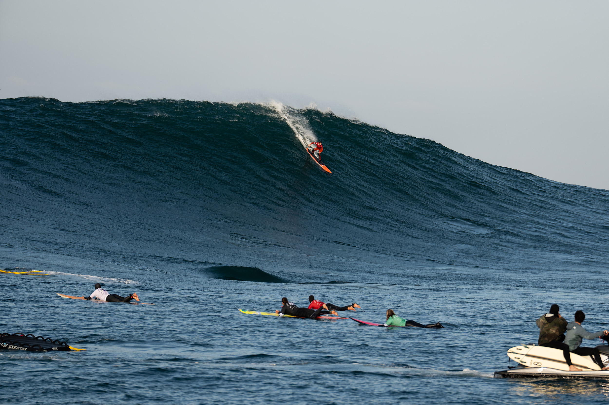
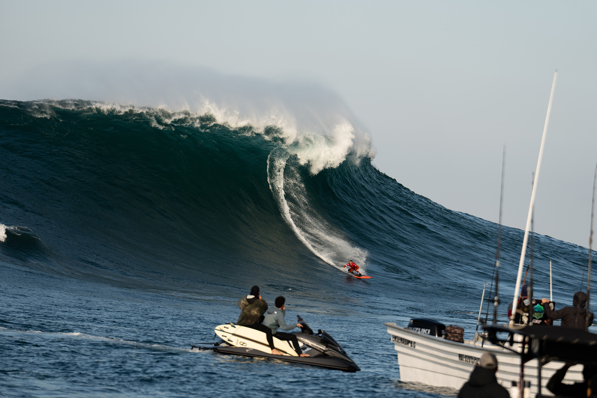
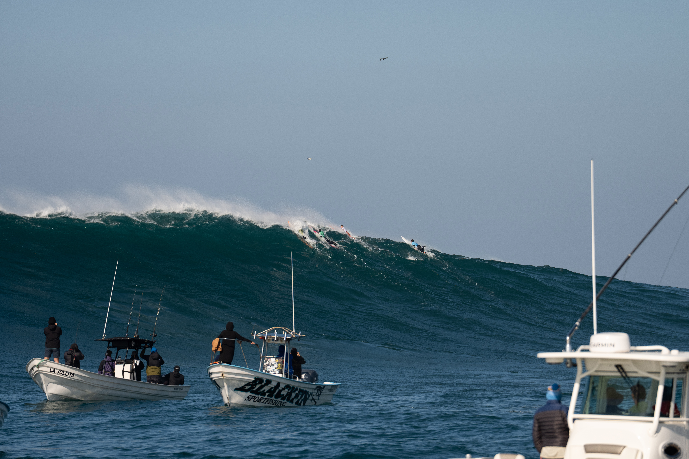

Killers, Todos Santos
El evento de olas grandes más importante de México.
El despertador sonó a las 3:30am. Salí de San Diego a las 4am con la ciudad completamente dormida. Iba muy despierto, con esa energía rara que te da la anticipación. Sabía que en la tarde me pegaría el cansancio, así que antes de salir reservé un cuarto en Ensenada — no tenía intención de manejar de regreso ese mismo día.
Llevaba días viendo el forecast, viendo cómo ese swell se iba formando en el Pacífico norte. Una semana antes ya sabía que iba a ser el swell más grande del año. Le escribí a un amigo de Baja, él me pasó el contacto de alguien que estaba organizando una salida en barco desde Ensenada. No lo pensé dos veces.
El barco salió de Ensenada poco después de las 6am. El mar estaba sorprendentemente tranquilo. Killers es así, revienta siempre en el mismo lugar, sobre un arrecife al noroeste de la isla, y el resto del océano puede estar en calma mientras ahí se arma el caos. Tardamos una hora en llegar.

Veníamos como diez personas en el barco, todos de Tijuana, todos con la misma curiosidad de ver estas olas enormes. Había más fotógrafos entre el grupo, buena onda todos. Yo llevaba mi cámara con el 70-200, listo para tomar fotos desde lejos.

Fue al rodear la isla que las vimos por primera vez. A lo lejos, montañas de agua levantándose y derrumbándose sobre sí mismas. El corazón me latió fuerte. Es un momento difícil de describir, algo entre la emoción pura y la adrenalina. Treinta pies. Nueve metros de agua moviéndose a toda velocidad.

Había unas veinte lanchas alrededor del lineup. Motos de agua patrullando. Helicópteros. Todo para el Big Wave Event de nivel mundial, los mejores surfistas de olas grandes del planeta estaban ahí, esperando su turno en el agua fría del Pacífico.

Cuando llegaba un set, se escuchaba entre los barcos los gritos de emoción de todos los espectadores.
Hubo varios rides que se quedaron grabados. Uno en particular, un surfista que tomó una ola que parecía imposible, la bajó entera con una facilidad como si fuera cualquier cosa. Impresionante. También hubo un evento femenino, y las mujeres estaban tomando olas igual de grandes. Hubo wipeouts fuertes, momentos de silencio mientras las motos de agua salían a rescatar, y luego el alivio colectivo cuando veías al surfista salir.



El 70-200 hacía su trabajo. Desde el barco en movimiento, con el agua salpicando y el sol cambiando de ángulo, cada foto era un pequeño reto. Pero había algo satisfactorio en eso.



Al final de la tarde regresamos a Ensenada. Me quedé esa noche en el hotel que había reservado, con el cansancio encima pero con esa satisfacción de haber visto algo que no se ve todos los días. Al día siguiente, de regreso a San Diego, me paré en Baja Malibu a surfear. El swell todavía estaba activo, tubos perfectos, mucha fuerza, algo de miedo en el agua. Exactamente lo que era de esperarse después de un día como ese.
Killers te recuerda por qué el océano merece respeto.